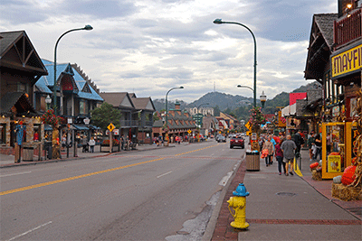
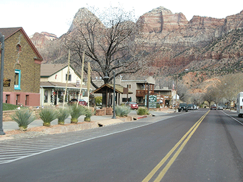
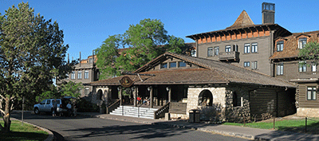
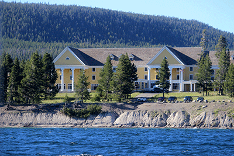
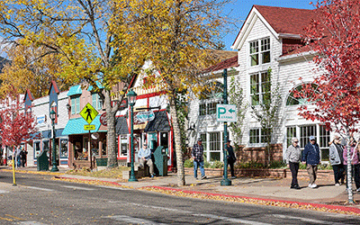
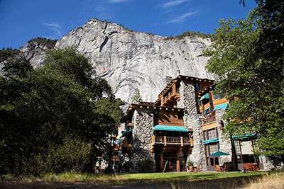

Planning Your Trip
Planning a trip to a national park can be equally exciting as the trip itself. This page serves as a comprehensive guide to help you plan your next visit, with helpful tips and insider advice designed to make your trip smooth, safe, and unforgettable. You will find information on the best times of year to visit each park, what to pack, where to stay, and even local food options worth checking out. This guide will help you explore with confidence and start planning your perfect national park getaway.
Items to Pack
According to the National Park Service, these 10 items are essential to pack to cover your travel basics. It is not an exhaustive list, as more items may be needed depending on the activities that you do. These items include:- Navigation - Maps, Compass and GPS System
- Sun Protection - Sunglasses, Sunscreen and Hat
- Insulation - Jacket, hat, gloves, rain shell, and thermal underwear
- Illumination - Flashlight, lanterns, and headlamp
- First Aid Supplies - First Aid Kit
- Fire - Matches, lighter and fire starters
- Repair Kit and Tools - Duct tape, knife, screwdriver, and scissors
- Nutrition - Food
- Hydration - Water and water treatment supplies
- Emergency Shelter - Tent, space blanket and tarp
Once you’ve packed, it’s time to plan your experience. This guide dives into the six most visited parks, highlighting the ideal times of year to visit, lodging options, and nearby food recommendations, all of which will make your experience unforgettable.
Best Times of Year, Lodging, and Dining Experiences
Great Smoky Mountains National Park
The Great Smoky Mountains offer something different in every season, so the best time to visit depends on what you’re looking for. Spring and early summer offer wildflowers and synchronous fireflies, while summer offers vibrant green scenery and long days for hiking and sightseeing, though summer is also the busiest time. Fall is filled with autumn colors from mid-September through October, perfect for foliage viewing and scenic drives. Winter is quieter with occasional snow dusting the mountain. Weather varies with elevation, so it is important that you are prepared for changing conditions, and plan your visit based on the activities you want to enjoy.
There are several affordable, highly rated lodging options just minutes from Great Smoky Mountains National Park, many within walking distance of downtown Gatlinburg. The Gillette, located about 1.8 miles from the park headquarters, is a convenient and comfortable choice, offering a variety of room options and easy access to shops, dining, and attractions in town. Slightly closer to the park at 1.6 miles away, the Embassy Suites by Hilton Gatlinburg Resort provides a resort-style stay with amenities including a highly rated breakfast, an on-site restaurant, a poolside bar, and pet-friendly accommodations, making it a great option for families and travelers bringing dogs. For those looking to stay even closer, The Timber at Holly Branch is just 1.5 miles from the park headquarters and within walking distance of downtown Gatlinburg. Guests can enjoy amenities such as a continental breakfast, on-site dining, and outdoor seating areas. All of these options have multiple room configurations to suit different travel needs.
While there are no restaurants within the park, there are plenty of options right outside. Crockett’s Breakfast Camp in downtown Gatlinburg, Tennessee, is known for its Southern breakfasts with big portions. Some of its best items include griddle cakes and cinnamon rolls. It has a rustic atmosphere that fits the region’s vibe, and is great for anyone who wants a filling breakfast before heading into the park. The Greenbrier in Gatlinburg, Tennessee, is a higher-end restaurant known for its great service and Southern-inspired cuisine. Located in a lodge, the atmosphere is very cozy, and the restaurant is known for its steak and seafood dishes. The Cherokee Grill, also located in Gatlinburg, Tennessee, is a steakhouse known for its hickory-grilled steaks, seafood, and other regional favorites. A restaurant with a mountain lodge atmosphere, it is located in a convenient location that makes it a great stop after exploring the park.

Zion National Park
Zion National Park offers a different experience each season, so the best time to visit depends on what you are looking for. Spring and fall offer cooler temperatures and fewer crowds, making them perfect for hiking and sightseeing, though shuttle schedules and daylight hours may be limited. Summer offers green landscapes and full park services but also the hottest weather and the biggest crowds, so getting an early start to your day is very important. Winter is the quietest season, with fewer visitors and occasional snow, but colder temperatures, iced over trails, and limited services can make access more challenging.
There are several affordable and highly rated lodging accommodations both within and just outside of Zion National Park. The Zion Lodge is the only in-park hotel accommodation, but it doesn’t get more central to the park’s sights and trailheads than this. Besides having spectacular park views right outside of your window, the lodge also offers bike rentals, horseback riding tours, and is one of the Zion Canyon shuttle stops, allowing guests to access other areas of the park. The lodge also offers an on-site restaurant and small cafe, and you can park your car inside the National park, even during the season where it is closed to private vehicles. There are also lovely accommodations in Springdale, Utah, which is the town right outside of the park’s gates. The Cable Mountain Lodge is the closest hotel to the park’s entrance and is within walking distance. In addition to its beautiful rooms, the lodge also has a pool, spa, grocery store, brewery, coffee shop, and riverfront picnic area. It is also within walking distance to Zion Outfitters if you are interested in renting bikes or other gear. The Cliffrose Springdale Hotel is another accommodation with a great location. It is a five minute walk to the park entrance and is also only a few minutes walk away from the Cable Mountain Lodge plaza, which has a grocery store and coffee shop. This hotel also offers a botanical garden, spa, and restaurant on-site. All of these options have multiple room configurations to suit different travel needs.
With limited restaurants inside Zion National Park, there are many highly rated and affordable restaurants right outside of the park’s gates. Wild Thyme Bistro at Tree Ranch in Springdale, Utah, is located just minutes away from the south entrance of Zion National Park. Serving locally inspired meals that use fresh ingredients and have a lot of flavor, this is a great way to unwind after exploring all that the park has to offer. It is walkable from many Springdale hotels, making it an easy option that you do not need a car for. The Camp Outpost, located in Springdale, Utah, is also very close to the park’s entrance. Known for their burgers, salads, and comfort foods, this is a great place to eat, especially if you are looking to enjoy outdoor seating with their large patio and fire pit. The Camp Outpost is also known for its fresh ingredients and friendly staff. MeMe’s Cafe, also located in Springdale, Utah, is located near the pedestrian area that is walkable from many hotels. It is known for its versatile menu, many of the favorites being burgers, sandwiches, sweet and savory crepes, and breakfast items. It is a great option if you are looking for something that is casual and friendly, and if you want to enjoy a view with your meal.

"Springdale, Utah 2" by Ken Lund is licensed under CC BY-SA 2.0.
Grand Canyon National Park
The best time to visit the Grand Canyon depends on weather, crowds, and access, but late spring, particularly in May, and early fall, particularly September and October, are most ideal, offering comfortable temperatures, fewer visitors, and full access to most offerings. Summer comes with the busiest crowds and extreme heat, especially below the canyon rim, along with afternoon monsoon storms, though all park services are open and functional. Winter is the least crowded and most affordable time to visit, but colder temperatures, ice-covered trails, and the closure of the North Rim can limit access. Overall, spring and fall provide the best mix of scenery and crowd levels, while summer and winter appeal to visitors willing to plan around weather and conditions.
The Grand Canyon has many lodging options inside the park, on both the North and South Rim, as well as right outside of the park’s gates. The El Tovar Hotel is located directly on the South Rim of the canyon and features a fine dining room, lounge, gift shop, and newsstand. The hotel offers full bell service and in-room dining for breakfast and dinner. Due to the hotel’s historic nature, no two rooms are alike, which gives the hotel unique charm. The Bright Angel Lodge and Cabins is located on the South Rim of the canyon and features a full-service restaurant, seasonal ice cream fountain, a bar, and the Canyon Coffee House. The accommodations range from lodge rooms to cabin, having a different option for everyone. The Grand Hotel is located in Tusayan, just one mile from the south entrance to the park, and is newly renovated. It is also one of the few hotels in the area with an indoor heated swimming pool and hot tub. Tusayan also offers restaurants and attractions such as the National Geographic IMAX Theatre and the Tusayan Trading Post. As two of these options are located within the park, it is recommended to book them 6-12 months in advance.
The Grand Canyon has many delicious and affordable dining options located within the park’s boundaries. The El Tovar Dining Room is located inside Grand Canyon Village on the South Rim inside the historic El Tovar Hotel. Being built in 1905, this restaurant is a classic meal spot at the Canyon, offering Southwest-inspired American cuisine. Unlike many options at the Grand Canyon, El Tovar takes reservations, which is ideal during the busy season. Yavapai Tavern is located inside the South Rim near Yavapai Lodge in Grand Canyon Village. This restaurant combines casual dining with scenic canyon views and serves local craft beers and Southwest-inspired dishes. Known for its lively dining atmosphere, it is a popular destination for locals and visitors alike. The Harvey House Café is located inside Bright Angel Lodge near the Rim Trail on the South Rim. It offers diner favorites such as sandwiches, salads, and many different kinds of comfort meals. The café is casual, family friendly, and is a great spot to grab quick meals before setting out on your adventure.

“Grand Canyon El Tovar Hotel 0504” by Grand Canyon National Park is licensed under the Creative Commons Attribution 2.0 Generic license.
Yellowstone National Park
The most popular time to visit Yellowstone is from June to September. During these months, the weather is warmest, all park roads are typically open to regular vehicles, and most services are offered, making it ideal for hiking, wildlife viewing, and seeing the park features. However, this time also brings the largest crowds. May and early October offer fewer visitors, emerging wildlife, and pleasant conditions, while the winter months of November through mid-May bring snow and limited road access but unique landscapes and wildlife sightings. The best time to visit depends on whether you value weather, road access, and crowd levels.
There are many lodging accommodations in Yellowstone National Park, all located near key attractions. However, not all lodging options are open all year round, and dates are subject to change. The Old Faithful Snow Lodge is located within walking distance to Old Faithful Geyser and many geothermal attractions. On site, there is a restaurant, gift shop, quick service options, and easy access to geyser trails. It operates from December 16-March 1 and April 24 - October 22nd. The Mammoth Hot Springs Hotel & Cabin is located near the north entrance of the park. It is a great option if you want to explore Mammoth Hot Springs Terraces and the Lamar Valley wildlife area. On site, there is a dining room, bar, and terrace grill. There are a variety of rooms and cabins available and this hotel has some of the longest operating dates in the park. The hotel operates from April 24 - March 8. Lake Yellowstone Hotel & Cabins is located on the shores of Yellowstone Lake and is close to West Thumb Geyser Basin, making it easy to do lakeside activities. On site there is a dining room, hotel deli, and canteen. It operates from May 15 - October 11.
With a number of lodging options inside Yellowstone National Park, visitors will also find a wide variety of dining options located within these accommodations. There are also a variety of options located directly outside of the park’s gates. Lake Yellowstone Hotel Dining Room is located in the Yellowstone Lake Village inside Yellowstone National Park. This restaurant offers a sit-down experience where you will find entrees such as grilled trout and other regional specialties. This option is best for lunch or dinner with a lake view and a slightly more upscale environment compared to other dining options. Dinner often requires a reservation during peak season. The Grant Village Lake House Restaurant is located in Grant Village within Yellowstone National Park. This restaurant’s menu features items such as tacos, sandwiches, and seasonal offerings. This restaurant is best for visitors looking for a casual lunch or dinner with waterfront views. Tumbleweed Bookstore and Cafe is located in Gardiner, Montana, right outside of Yellowstone’s north entrance. This cafe is known for its versatile menu which includes breakfast burritos, sandwiches, salad, and coffee. The cafe is also a bookstore with a very friendly atmosphere, which allows visitors to browse the books while they wait for their meal.

“Lake Hotel Yellowstone NP” by Miguel Hermoso Cuesta is Licensed under the Creative Commons Attribution-Share Alike 4.0 International license.
Rocky Mountain National Park
The best times to visit Rocky Mountain National Park include early fall, specifically mid-September, summer, specifically July through August, and late spring, specifically May through June. In September, visitors can see colorful trees, experience cool weather, and potentially have a few elk sightings. In Summer, visitors can experience cool breezes, wildflower blooms, open roads, and full offerings. In late Spring, visitors can experience wildflowers, wildlife, and fewer crowds, though occasional snow and cool nights are possible. The worst times to visit tend to be early spring as it is considered their mud season, and late fall into early winter, when trails can be muddy or snowy, roads and services may be closed, and strong winds or cold conditions make outdoor activities more challenging.
While there are no lodging accommodations located inside the park, there are many right outside in Estes Park. The Estes Park Resort and Spa in Estes Park, Colorado, is located within walking distance of downtown Estes Park restaurants, shops and breweries. It is about a 10 to 15 minute drive to the Fall River or Beaver Meadows park entrances. On site, there is a spa, Italian restaurant and bar, and an outdoor pool. The Silver Moon Inn, also located in Estes Park, Colorado, is a short walk or quick drive to Estes Park’s restaurants, coffee shops, galleries, and nightlife. The accommodation is located about 10 minutes away from the park’s main east entrances. The resort is also dog-friendly if you are considering bringing a furry friend with you. The Inn on Fall River and Fall River Cabins is located in Estes Park, Colorado, on Fall River. While it is a short drive to downtown, the location makes visitors feel as though they are right in nature. It is one of the closest lodging spots to the Fall River Entrance of the park.
While there are no dining options located within the park, there are many highly rated restaurants located right outside in Estes Park, Colorado. Bird & Jim is located right outside of the east entrance of Rocky Mountain National Park and is known for its locally-sourced, seasonally inspired cuisine with Colorado ingredients including elk, trout, and vegetables. It is regarded as one of Estes Park’s best fine-casual dining experiences, and is perfect if you are looking for views with your meals. Notchtop offers breakfast and brunch, European-style lunches, and bakery items, and is best known for its homemade breads and breakfast classics. It is perfect for visitors looking for a casual dining experience with outdoor seating. The Rock Inn Mountain Tavern is located just a short drive from the park’s east entrance. Known for its comfort-style American cuisine, some of its popular menu items include burgers, steaks, and salads. The restaurant also has a full bar, an outdoor patio, and offers live music during peak season. It is best if you are looking for a casual experience with live music.

“West Elkhorn Avenue, Estes Park (2024)” by Frank Schulenburg is is licensed under the Creative Commons Attribution-Share Alike 4.0 International license.
Yosemite National Park
The best times to visit Yosemite National Park are typically the last week of May, the first week of June, and September through early October. During these times, waterfalls are roaring, wildflowers are in bloom, almost all of the roads and viewpoints are open, temperatures are comfortable, and crowds are smaller than they are during summer. Mid-summer, specifically July to mid-August brings the heaviest crowds and hottest weather, while winter through early spring, specifically November through April, is much quieter with snow, but many roads, services, and offerings are limited or closed, making this time of year less ideal if you are looking for the full park experience.
There are many lodging accommodations both inside and outside of Yosemite National Park. The Ahwahnee, located in Yosemite Valley inside of the park, is right in the center of the park, close to Yosemite Falls, Half Dome viewpoints, and many trailheads within the valley. On site, there are numerous restaurants and lounges, and as this accommodation is so central, you can spend less time driving through the park and more time exploring. Yosemite Valley Lodge, located inside the park in Yosemite Valley, is located next to Yosemite Falls and is near the valley shuttle stops. This hotel is a great option if you want to be centrally located to the valley’s many waterfalls, trails, and scenic views. Onside, there is a cafe, restaurant, and you are also in close proximity to other eateries within the valley. For an option outside of the park, there is the Tenaya Lodge at Yosemite, located in Fish Camp, CA, about 10 to 15 minutes outside of the park’s South Entrance. This accommodation offers spacious rooms and cabins and has an onsite restaurant, spa, pool, and activities. There are several dining options on site and nearby, as well as a lounge and a market. You also have easy access to the Mariposa Grove of Giant Sequoias. As lodging inside of the park fills up months in advance, it is important to book as early as possible.
With a number of lodging options inside Yosemite National Park, visitors will also find a wide variety of dining options located within these accommodations. The Ahwahnee Dining Room is located at the Ahwahnee Hotel inside Yosemite Valley. This establishment offers American cuisine with some of its most popular dishes being pan-seared trout and artisanal desserts. The restaurant is designed with large windows and a lodge ambiance, giving diners beautiful views. This restaurant also takes reservations well in advance, which is recommended during peak season. The Mountain Room is located inside the park at Yosemite Valley Lodge, very close to the Yosemite Falls trailhead. This restaurant is known for its classic American dishes and high quality ingredients. It is a great option if you are looking for something a little bit more casual and relaxed than the Ahwahnee Dining Room. It is also open for dinner most of the year, but hours should be checked before arriving. The Pizza Deck is located in Curry Village, inside Yosemite Valley. This restaurant is a much more relaxed option and an outdoor spot, serving pizza, salads and drinks. This restaurant is often mentioned by visitors as one of the best casual food options in the park. This restaurant is best for visitors looking for a quick but delicious dining experience.

“Ahwahnee Hotel” by Almonroth is licensed under the Creative Commons Attribution-Share Alike 3.0 Unported license.
You're Ready For Your Next Adventure!
Exploring America’s national parks is an unforgettable experience, and planning ahead can help you make the most of your trip! Whether you’re looking to visit at the ideal time of year, find the coziest accommodation, or enjoy a memorable and delicious meal, there is something for everyone. With these tips, you will be ready to make the most of your next national parks adventure!